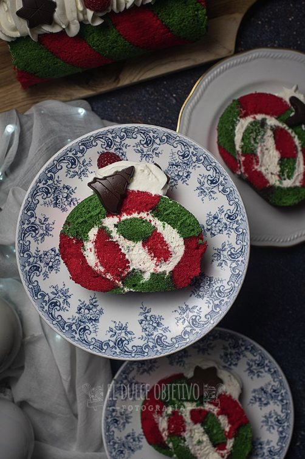

TRONCO NAVIDEÑO BICOLOR
Ingredientes para el bizcocho:
- 7 huevos.
- 175 gr de harina de trigo todo uso.
- 175 gr de azúcar blanca.
- 1 pizca de sal.
- Colorante en gel rojo.
- Colorante en gel verde.
Para el relleno y decoracion:
- 500 ml de nata para montar 35% materia grasa (si queréis triunfar de verdad 38% de central lechera asturiana)
- 5 bolsitas de té chai
- 120 gr de azúcar glas
Para el almibar:
- 175 ml de agua
- 175 gr de azúcar blanca
- 1 palo de canela
Preparación:
Para el relleno y cobertura:
- Vamos a comenzar por el relleno, porque tendrá que estar muy muy frío.
- Para ello ponemos toda la nata a calentar a fuego medio con las bolsitas de té chai. De esta forma la infusionaremos y llenaremos de aroma y sabor.
- Cuando veamos que va a romper a hervir, la retiramos del fuego para que no ocurra y tapamos para que infusione lo máximo posible hasta que esté a temperatura ambiente.
- Una vez esté a temperatura ambiente, retiramos las bolsitas de té con cuidado, escurrimos y tapamos la nata con film y al frigo al menos 6 horas.
Para el bizcocho:
- El bizcocho no puede ser más simple y no lleva ni levadura.
- Precalentamos el horno a 180º con calor arriba y abajo.
- Forra la bandeja del horno con papel encerado para hornear.
- Batimos los huevos con el azúcar hasta triplicar su volumen y tener una crema blanca y densa.
- Tamizamos la harina y vamos incorporando poco a poco, integrando con ayuda de una espátula de silicona con movimientos envolventes.
- Dividimos la masa en dos porciones iguales.
- En un bol sacamos una pequeña porción de cada una de las divisiones hechas para mezclar los colorantes en ellas. Pon una buena cantidad de cada uno, piensa que después hay que mezclarlos con el resto de la masa.
- Esto nos va a ayuda a que el colorante se haga más ligero y nos cueste menos integrarlo con el resto de la masa. Mezcla cada color con su masa.
- Pasa ambas cremas a una manga pastelera, si no tenemos lo podremos hacer en una bolsa de congelar.
- Vamos poniendo la masa en la bandeja con líneas de un par de dedos de grosor cada una en forma diagonal, comenzando por una esquina de la bandeja y terminando por la opuesta y alternando los colores.
- Cuando esté puesta toda la crema en la bandeja damos unos golpes en plano para retirar el exceso de burbujas y que se asiente bien y metemos en el horno.
- Hornear por unos 15 minutos.
- Sacar del horno, en caliente dar la vuelta a la bandeja para sacar le bizcocho, volvemos a girar la plancha, con mucho cuidado sobre un paño de cocina, ya que la parte que queremos que sea visible es la de abajo, y con cuidado enrollamos con el paño de cocina.
- Dejamos enfriar, de esta forma se quedará la forma de rollo y luego no nos costará trabajo formarlo.
Para el almibar:
- Lo preparamos mientras tenemos el bizcocho en el horno.
- En un cazo ponemos el agua, con el azúcar y la canela y llevamos al fuego.
- Cuando rompa a hervir dejamos unos tres minutos y retiramos.
- Dejamos enfriar tapado para que conserve los aromas a canela.
Montaje del tronco:
- Ya lo tenemos todo preparado, ahora solo queda montar y decorar.
- Sacamos la nata del frigo y junto con el azúcar glas montamos hasta que esté bien firme.
- Desenrollamos con cuidado el bizcocho y cortamos los laterales más estrechos para emparejarlos, los más largos los cortaremos al terminarlo.
- Con un pincel, vamos poniendo una buena cantidad de almíbar de canela por todo el bizcocho.
- Ponemos la mitad de la nata montada en el bizcocho extendido y con ayuda de una espátula la dejamos de forma uniforme por todo el bizcocho.
- Enrollamos con cuidado.
- Cortamos el extremos para que se vea bonito y ponemos en la bandeja o planto en el que lo vayamos a presentar.
- El resto de la nata la ponemos en una manga pastelera con una boquilla rizada y decoramos al gusto.
- Podemos culminar con unos frutos rojos o con unas chocolatinas navideñas
- Conservar en frio y disfrutar.
